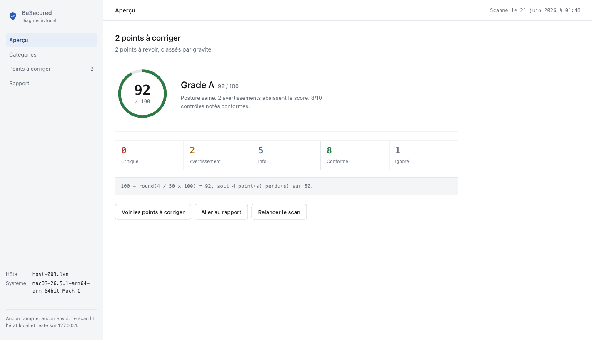
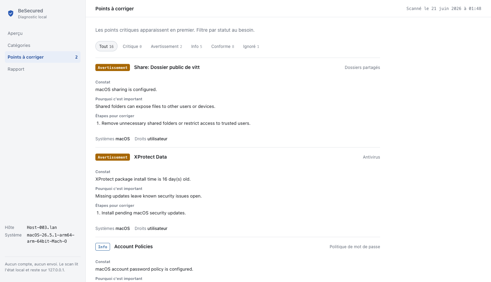
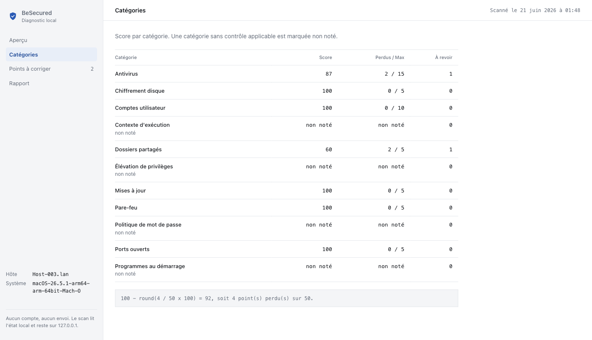

| Project Manager | Mohammedreda El Aroui |
| Team Members | Sidi Hamadi, Philemon Vittet, Abdelrahmn Dahy |
| Report Date | June 21, 2026 |
| Version | v3.0 |
| Sprint | Week 8 of 10 |
BeSecured is on schedule. The PowerShell prototype has been rebuilt into a cross-platform Python scanner with a local visual interface. Weeks 1 to 7 are complete: the scanner runs on Windows, macOS and Linux, computes an explainable 0 to 100 risk score, and reports findings by severity with plain-language fixes. The interface now opens in its own window and reads like a system diagnostic tool rather than a web page. Week 8 covers packaging and quality work. The whole tool runs locally, with no account, no backend and no data upload, and a test suite of 59 checks guards the scan contract and the privacy promise.
As of June 21, 2026, Sprint Week 8
Weeks 1 to 7 are delivered. The scanner engine, the risk score, the local interface and the report export all work end to end. Week 8 is in progress and focuses on packaging and quality assurance.
| Wk | Phase | Key objectives | Status |
|---|---|---|---|
| 1 | Kick-off | Charter, repository, tooling | Complete |
| 2 | Planning | Backlog, risk register, scope | Complete |
| 3 | System design | Architecture, module breakdown, UI direction | Complete |
| 4 | Environment | Dev setup, package skeleton, tests harness | Complete |
| 5 | Scanner | Cross-platform checks, scoring engine, HTML/JSON export | Complete |
| 6 | Risk engine | Severity weights, category and finding impact, honest SKIP/INFO | Complete |
| 7 | Local UI | Native-style diagnostic panel, app-window launch, report view | Complete |
| 8 | Packaging & QA | Double-click packaging, test pass, accessibility, privacy audit | In progress |
| 9 | AI (optional) | Plain-language explanations for top findings | To do |
| 10 | Delivery | Final demo, docs, code freeze, handoff | To do |
| Sprint | Planned | Delivered | Velocity |
|---|---|---|---|
| W1-W4 | Charter, planning, design, environment | All foundations in place | 100% |
| W5 | Cross-platform scanner module | Python scanner (Win/Lin/Mac) + structured findings | 100% |
| W6 | Risk engine and recommendations | Explainable score, category and finding impact | 100% |
| W7 | Local interface and report export | Native-style UI + HTML/JSON export | 100% |
Real scan run on macOS 26.5 (Apple Silicon), June 21, 2026
The screenshots below come from a real scan on a macOS machine using the BeSecured interface. The tool produced a score of 92 out of 100, grade A, with two warnings to review and no critical finding.


Cross-platform Python scanner with a local web interface
A single entry point runs the common checks, then dispatches to the checks for the current operating system, aggregates the findings, and computes the score. The interface is served by a small local Python server and talks to the scanner through one local endpoint.
| Module | Responsibility |
|---|---|
| scanner.py | Entry point. Runs common checks, dispatches to the OS module, aggregates findings, builds the result. |
| checks/common.py | System info, privilege detection, listening ports, cross-platform helpers. |
| checks/windows.py | Firewall, Defender, updates, users, password policy, shares, startup, UAC, BitLocker. |
| checks/macos.py | Firewall, FileVault, Gatekeeper, SIP, XProtect, users, sharing, launch items. |
| checks/linux.py | Firewall, updates, LUKS, users, password rules, shares, startup, antivirus. |
| models.py | Finding and ScanResult data contracts, with a stable JSON schema. |
| scoring.py | Score, grade, per-category and per-finding impact, calculation steps. |
| report.py | HTML and JSON report rendering. |
| ui/ | Local server and browser interface. Opens in a dedicated app window. |
| Category | What it reads | Platforms |
|---|---|---|
| Open ports | Listening TCP ports and risky services (RDP, SMB, SSH, VNC, databases) | All |
| Firewall | Local firewall state and profiles | All |
| Updates | Freshness of system and package updates | All |
| Accounts | Admin count, guest access, accounts without a password | All |
| Password policy | Minimum length and expiry rules when readable | Win / Linux |
| Shared folders | Non-default SMB, NFS or OS shares | All |
| Startup programs | Startup entries, with suspicious temporary paths flagged | All |
| Protection | Antivirus or native protection and signature freshness | All |
| Disk encryption | BitLocker, FileVault or LUKS state | All |
| Hardening | UAC on Windows, Gatekeeper and SIP on macOS | Win / macOS |
An explainable score, a local-first design, and an automated test suite
| Status | Points lost |
|---|---|
| OK | 0 |
| WARN | 2 |
| CRIT | 5 |
| INFO | ignored |
| SKIP | ignored |
Only OK, WARN and CRIT change the score. INFO and SKIP are shown for transparency but never move the number, so an unavailable check is never counted as a pass.
Grades: A (90-100), B (75-89), C (60-74), D (40-59), F (0-39).

Open risks and the plan for Weeks 8 to 10
| ID | Risk | Severity | Mitigation |
|---|---|---|---|
| R-01 | Some system checks need administrator rights | High | Non-admin mode is detected; checks fall back to SKIP with an explanation instead of failing. |
| R-02 | False positives could mislead non-technical users | Medium | Unavailable checks are SKIP, not pass; the UI contract and parser tests guard the result shape. |
| R-03 | Performance on machines with many connections | Medium | Port scope is bounded; checks read local state only, with no remote scanning. |
| R-04 | Sensitive data must not leave the device | Critical | Local-only design, 127.0.0.1 binding, remote-path write guard, and a no-remote-reference test. |
| R-05 | Detection of third-party protection is limited | Medium | Native protection is detected first; gaps are reported honestly rather than guessed. |
| R-06 | Optional AI work could slip the timeline | Medium | AI explanations stay optional and will be dropped if Week 8 to 9 runs tight. |
| Week | Milestone | Success criterion |
|---|---|---|
| W8 | Packaging and QA | Double-click launch on Windows and macOS; full test pass; privacy audit signed off. |
| W9 | AI explanations (optional) | Plain-language summary for the top findings, generated locally where feasible. |
| W10 | Final delivery | Demo, documentation, code freeze and handoff complete. |
| Priority | Items |
|---|---|
| Must | One-click scan, 0-100 score, findings by severity, privacy-first (no data stored or sent). |
| Should | Report export (done as HTML and JSON), double-click packaging, accessibility pass. |
| Could | Local scan history kept only on the machine, finer scoring profiles. |
| Won't | Aggressive or remote scanning, exploitation, automatic remediation, continuous monitoring, cloud storage. |